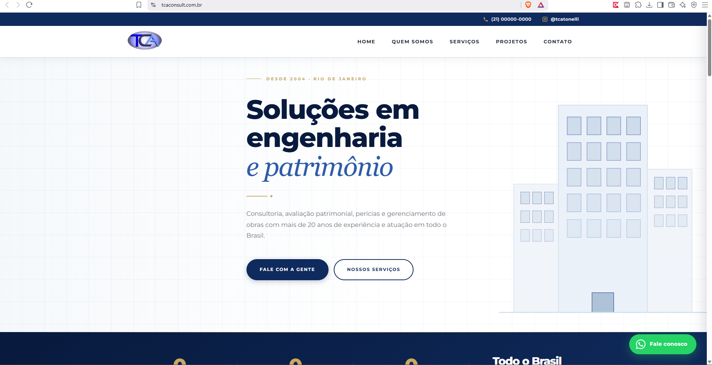
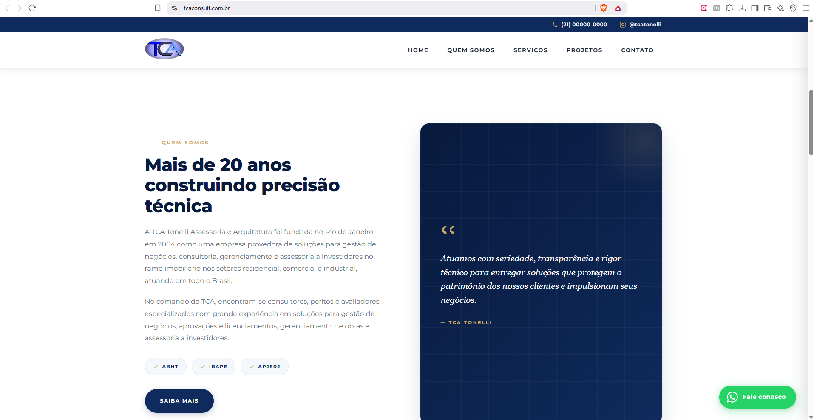
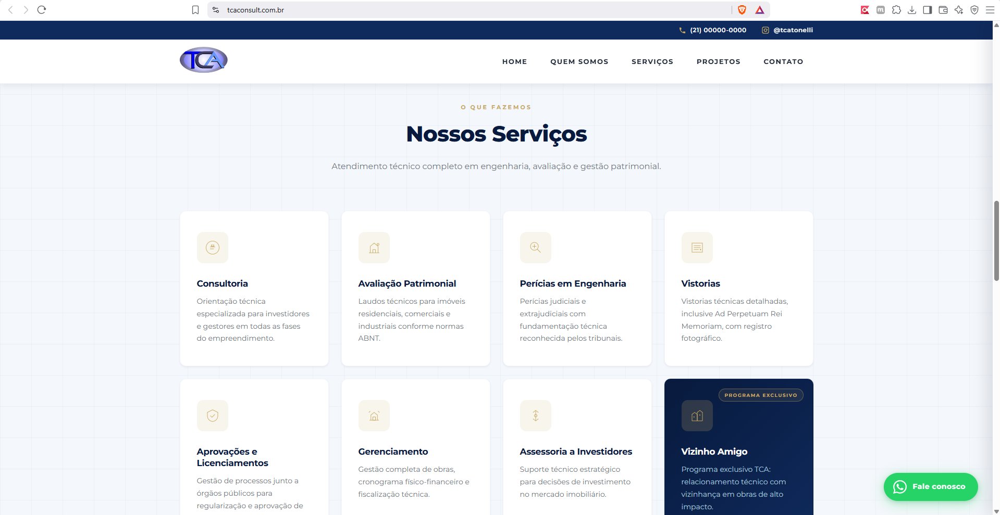
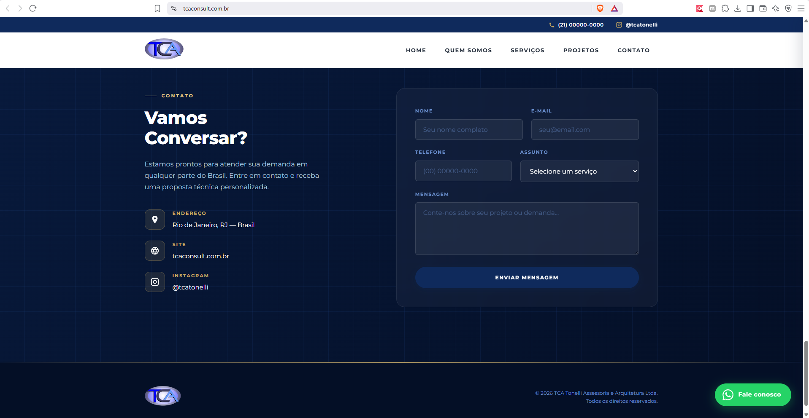

TCA Tonelli
Site institucional da TCA Tonelli, empresa carioca de assessoria fundada em 2004, especializada em engenharia e gestão patrimonial — consultoria, avaliação de imóveis, perícias judiciais, vistorias e gerenciamento de obras, com atuação em todo o Brasil.
01Sobre o projeto
O desafio aqui era de credibilidade. A TCA atua com perícia judicial e avaliação patrimonial — serviços em que o cliente precisa confiar no rigor técnico antes de fechar. O site tinha que transmitir seriedade e experiência já na primeira dobra.
A solução foi um visual sóbrio, em azul-marinho e dourado, com a tipografia e o espaçamento puxando para o institucional em vez do promocional. Os selos de filiação (ABNT, IBAPE, APJERJ) aparecem logo na seção institucional, porque são exatamente o que valida a empresa nesse mercado.
Os oito serviços ficam em cards autoexplicativos, e a conversão acontece por dois caminhos: formulário de contato com seleção do serviço desejado, e WhatsApp flutuante para quem prefere falar direto.
02O que o site entrega
-
Apresentação institucional
Hero com posicionamento claro: soluções em engenharia e patrimônio desde 2004.
-
Prova de credibilidade
Selos ABNT, IBAPE e APJERJ em destaque na seção “Quem somos”.
-
Catálogo de serviços
Oito frentes descritas em cards, incluindo o programa exclusivo “Vizinho Amigo”.
-
Formulário qualificado
Contato com seleção do serviço, para a proposta já chegar direcionada.
-
WhatsApp flutuante
Canal direto fixo na tela para quem prefere conversar na hora.
-
Alcance nacional
Comunicação reforçando atuação em todo o Brasil, não só no Rio de Janeiro.
03Capturas de tela
Registros da interface — preservados aqui mesmo que o sistema saia do ar.



